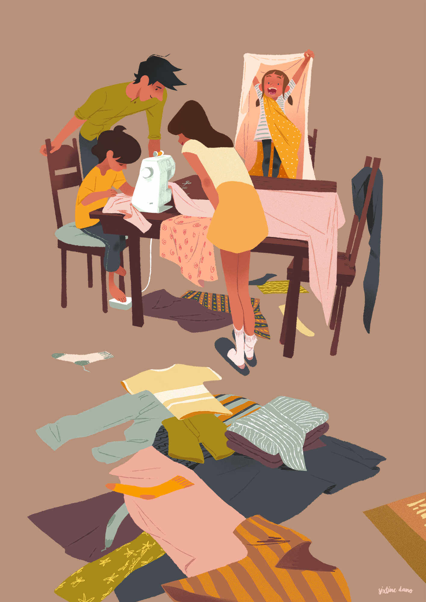

Et si Emmaüs n’avait plus besoin d’exister ? Jusque là, c’était bien pratique. Qu’importe qu’on produise toujours plus, puisqu’on peut se déculpabiliser en envoyant ça au recyclage ! Qu’importe qu’on consomme toujours plus, puisqu’il y a quelque part en bout de chaîne d’aimables petites mains à qui refourguer la masse des objets qu’on ne sait plus réparer. Qu’importe qu’on achète toujours plus, puisqu’on trouvera bien où refiler ce dont on vient de se lasser, qui est passé de mode ou dont, au fond, on n’avait pas vraiment besoin.
Assez. On a fini par se dire que ça ne sert à rien, d’acheter des trucs, des machins, des bidules. On pensait qu’ils allaient nous remplir de bonheur : ils ne remplissaient que nos fonds de placard. On s’est ainsi rendu compte que posséder ne nous protégeait pas, ni de la tristesse, ni de la maladie. Et puis, au lieu de se poser la question de ce qu’on allait devoir faire de tout cet amoncellement, on a tenté quelque chose : produire moins. Moins d’énergie. Moins de trucs. Moins de machins. Moins de bidules.
On n’en est pas devenu moins heureux. La simplicité a même un goût de libération. On travaille à côté de chez soi. Les marchandises ne traversent plus la planète entière. On consomme des choses qui ne s’achètent pas : le plaisir d’être ensemble, la saveur des fêtes, le temps.
Les règles ont changé : la production de l’inutile est encadrée par la loi, l’obsolescence programmée est sévèrement réprimée, les secteurs industriels ont pour priorité la production de biens durables et non superflus. Amazon n’est plus qu’une façon de monter à cheval et Ali Baba une histoire qui fait rêver les enfants.
Il n’y a plus ceux qui possèdent, et ceux qui n’ont rien. Ceux qui demandent à d’autres d’entretenir leurs belles pelouses, et ceux qui dépendent de leur jardin potager pour survivre. On ne va pas mentir : ça ne s’est pas fait en rêvassant d’un idéal, la pâquerette à la bouche. Il a fallu réinventer la façon de faire tourner l’économie en rond pour qu’elle devienne locale et circulaire, il a fallu réapprendre ce qui comptait vraiment et ce qui était superflu, il a fallu trimer pour remplacer le système productiviste par une alternative qui tienne la route.
Mais ça valait le coup. Parce qu’on a pu prendre le temps de penser, d’aider, d’expérimenter. Qu’on n’a laissé personne de côté. On s’est collectivement redonné la dignité de ne plus se définir par ce qu’on consommait, mais par ce qu’on partageait. Et si Emmaüs n’avait plus besoin de fonctionner ? C’est le monde entier qui fonctionnerait comme Emmaüs.
Diplômée de l’école des Gobelins, Sixtine Dano est illustratrice ainsi que réalisatrice, animatrice 2D, et décoratrice pour le cinéma d’animation. Elle réalise en 2018 avec trois camarades de classe le court-métrage animé d’éco-fiction Thermostat 6.
Elle est également porte-parole de l’association Action Climat Paris et participe aux actions de désobéissance civile non-violente avec plusieurs organisations environnementales.
Sixtine_Dano.jpeg
Germain_Sarhy.jpeg
Texte issu d’un entretien avec Germain Sarhy.
Germain Sarhy est le fondateur du village Emmaüs Lescar-Pau et son responsable depuis presque trente ans. Cette communauté, qui accueille une centaine de compagnonnes et compagnons, est devenue une structure emblématique dans la mise en place d’alternatives concrètes, sur le plan écologique et social.